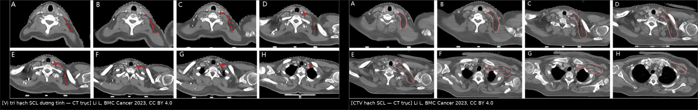
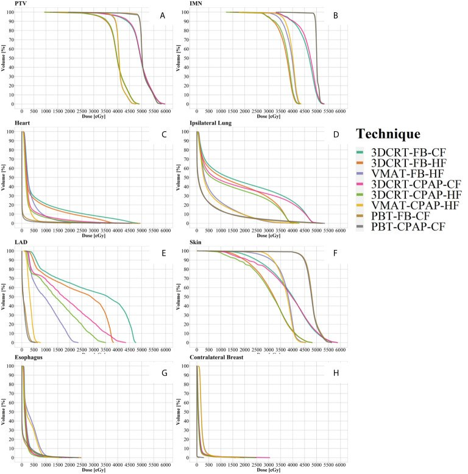
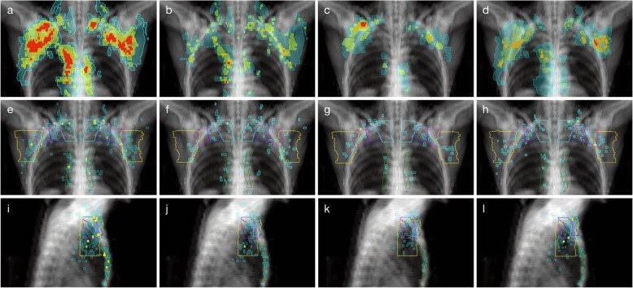
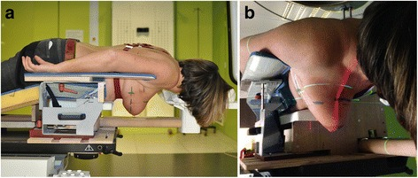
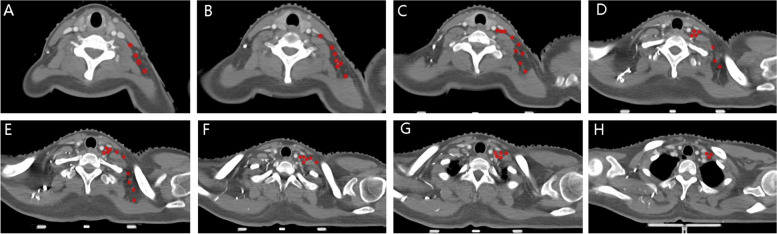

598 — Xạ trị vùng hạch sau ung thư vú (RNI): ai cần, vẽ thể tích bia thế nào, liều–phân liều & biến chứng / Regional nodal irradiation for breast cancer
Tags: pattern:xa-tri-vung-hach pattern:tai-phat-hach vung:vu vung:nguc score:ESTRO-RTOG-CTV score:B51 protocol:CT-simulation protocol:DIBH protocol:IMRT-VMAT protocol:PET-CT incidentaloma:hach-trong-nguc
Mức chắc chắn (certainty): tổng hợp y văn (literature synthesis) — nhóm tự biên từ các bài mở toàn văn (BMC Cancer 2023, PMC10688076; Radiat Oncol 2020, PMC7268399; Radiat Oncol 2017, PMC5259946; Pathol Oncol Res 2022, PMC9272418; Front Oncol 2021, PMC8072050; Radiat Oncol 2017, PMC5446717; World J Clin Cases 2024, PMC11185373; Ann Surg Treat Res 2024, PMC11164658; Technol Cancer Res Treat 2024, PMC11622324) + bản toàn văn thử nghiệm NSABP B-51/RTOG 1304 (NEJM 2025, PMC12269788, CC BY-NC-ND — chỉ trích số, không lấy ảnh). Số liệu giữ đúng theo từng nguồn; chỗ chỉ có trong guideline không mở toàn văn thì ghi rõ tên thử nghiệm.
1. Tổng quan — vì sao xạ hạch (chứ không chỉ xạ vú) và vì sao "liều 50 Gy" là câu trả lời cho vi thể
- Bản chất vấn đề: sau mổ, phần lớn "bệnh còn lại" nằm ở hạch vùng dưới dạng vi di căn (micrometastasis), không thấy trên mọi hình ảnh. Xạ trị vùng hạch (regional nodal irradiation — RNI) không "đốt khối u" mà diệt ổ vi thể trong nách độ I–III, hạch Rotter, hạch đỉnh nách/trên đòn (level IV) và chuỗi trong ngực (IMN). Tác dụng lên ổ vi thể lớn hơn nhiều so với u đại thể: xạ hậu phẫu làm giảm ~33% nguy cơ tái phát vùng trong các thử nghiệm (PMC11185373).
- Vì sao phải biết chỉ định: hạch trên đòn là vị trí tái phát tại chỗ–vùng đứng thứ hai sau thành ngực; ở nhóm nhiều hạch nách dương tính, tái phát trên đòn > 20% nếu không xạ, và giảm còn < 10% khi xạ dự phòng (PMC10688076).
- Ngưỡng định lượng — 4 thử nghiệm trụ cột (số 10 năm nếu có):
| Thử nghiệm | Quần thể | Can thiệp | Kết quả chính |
|---|---|---|---|
| MA.20 (n = 1.832, theo dõi 9,5 năm) | Sau bảo tồn; 90% N+ | WBI + boost ± SCV/IMN | DFS 82,0% vs 77,0%; OS 82,8% vs 81,8% (không khác) (PMC5259946) |
| EORTC 22922/10925 (n = 4.004, 10,9 năm) | 24% đã cắt toàn tuyến; 44% N0 (u trung tâm/trong) | WBI/TWI ± SCV/IMN | DFS 72,1% vs 69,1% (HR 0,89); OS 82,3% vs 80,7% (HR 0,87; p hiệu chỉnh 0,0496) |
| DBCG-IMN (n = 3.089, 8,9 năm) | N+ | Có/không xạ IMN | OS 8 năm 75,9% vs 72,2% (HR 0,82; p = 0,005) |
| Gộp MA.20 + EORTC | — | — | OS HR 0,88 (p = 0,034) |
| AMAROS (n = 1.425) | cT1-2N0, SLN (+) | ALND vs xạ nách I–III + SCV | Tái phát nách 5 năm 0,4% vs 1,2%; phù tay (chu vi tăng ≥ 10%) 5,3% vs 12,6% (PMC5259946; PMC10732511) |
| NSABP B-51/RTOG 1304 (n = 1.556 phân tích, 59,5 tháng) | cT1-3N1 → ypN0 sau hóa tân bổ trợ | Có/không RNI | IBCRFI 5 năm 92,7% vs 91,8% (HR 0,88; KTC 95% 0,60–1,28; p = 0,51) — không lợi; độc tính độ 4 0,5% vs 0,1% (PMC12269788) |
- Phản biện (bắt buộc đọc kèm): B-51 chỉ có 109 biến cố trong khi cần 172 để đủ lực thống kê → nguy cơ sai lầm loại II; theo dõi mới ~5 năm nên chưa trả lời được nhóm HR+/HER2− (tái phát muộn). Phân tích nhóm con trong B-51 cho kết quả ngược chiều: TNBC HR 2,30 (1,00–5,25) bất lợi với RNI, còn HR+/HER2− HR 0,41 (0,17–0,99) nghiêng có lợi (PMC12686210) — đây là giả thuyết, không phải chỉ định. Kết luận thực hành: B-51 cho phép BỎ RNI ở ypN0 sau hóa trị tân bổ trợ, không cho phép "bỏ RNI ở mọi N1".
- TẠI SAO hình ảnh trông như vậy (vật lý + giải phẫu):
- Hạch nằm cạnh mạch, không nằm trong mô tuyến → thể tích bia phải vẽ theo mốc mạch máu (tĩnh mạch cảnh trong, động mạch cảnh, động mạch ngực trong), không theo "khoảng trống" cảm tính. Vì vậy CT mô phỏng có cản quang là bắt buộc khi vẽ hạch trên đòn/IMN.
- Cửa sổ liều: tế bào ung thư vú có α/β thấp (~4 Gy) nên nhạy với liều mỗi phân liều; đó là cơ sở dùng 40–42,5 Gy/15 phân liều cho vú/thành ngực. Nhưng với IMN (nằm sâu, sát tim) bằng chứng phân liều lớn còn yếu, nhiều hướng dẫn vẫn khuyên phân liều chuẩn (PMC9272418).
- Tim là cơ quan nguy cơ số 1: nguy cơ biến cố mạch vành tăng ~7,4% mỗi 1 Gy liều trung bình tim (Darby 2013, NEJM); liều trung bình tim trung bình toàn cầu giảm 4,6 Gy (2014) → 2,6 Gy (2017), và kỹ thuật nín thở sâu (DIBH) hạ còn 1,7 Gy so với 4,5 Gy khi thở tự do (PMC11622324).
- Vì sao VMAT không phải lúc nào cũng "tốt hơn": VMAT hạ liều LAD nhưng tăng liều thấp vào tim → liều trung bình tim có thể cao hơn 3D-CRT; proton hạ được cả hai (PMC11622324, PMC8072050).
2. Mẫu hình (pattern) + chẩn đoán phân biệt theo vị trí (Gamut)
- Khuôn 1 — Hạch trên đòn/đỉnh nách (level IV) to ra cùng bên. Gamut: tái phát/vi di căn SCL vs hạch phản ứng sau tiêm vaccine vs hạch sau xạ (xơ hóa) vs hạch do nhiễm trùng da/thành ngực. Chốt: hạch SCL thật nằm dọc bờ sau–ngoài tĩnh mạch cảnh trong, quanh góc tĩnh mạch (venous angle); trong 42 ca/109 hạch dương tính, 100% hạch nằm ở bờ sau–ngoài TM cảnh trong, không có hạch ở phần trước–trong TM cảnh trong/ĐM cảnh (PMC10688076). Hạch ở tam giác sau cổ (level V) chỉ gặp khi nách dương tính lan rộng, phân bố dọc mạch cổ ngang, giới hạn trong cơ vai–móng và bó cơ bậc thang.
- Khuôn 2 — Hạch nách "mới" sau khi đã RNI. Gamut: tái phát trong trường xạ vs tái phát bờ (marginal) vs tái phát ngoài trường vs hạch lành phản ứng. Ngưỡng đáng nhớ: khi đối chiếu 226 hạch tái phát của 69 bệnh nhân với bản đồ thể tích bia, RTOG: 70% trong, 4% bờ, 27% ngoài; ESTRO: 73% trong, 2% bờ, 25% ngoài; phủ toàn bộ hạch tái phát chỉ ở 38% (RTOG) vs 57% (ESTRO) số bệnh nhân — thêm thể tích vùng cổ sau (RADCOMP posterior neck) nâng lên 48% vs 70% (PMC7268399).
- Khuôn 3 — Hạch trong ngực (IMN) dương tính. Gamut: di căn IMN vs hạch cạnh tim lành vs nốt phổi trong rãnh vs di căn màng phổi/trung thất. Chốt: IMN nằm trong khoang giữa sụn sườn và màng phổi, dọc ĐM ngực trong, gian sườn 1–3(–4); trên CT chỉ thấy rõ khi có cản quang và cửa sổ mô mềm. Xạ IMN có lợi sống còn (DBCG-IMN) nhưng đổi bằng liều tim — đây là chỗ quyết định kỹ thuật (DIBH, VMAT/proton, chấp nhận 46–48 Gy ở IMN).
- Khuôn 4 — Dày da/thành ngực sau xạ, không có hạch. Gamut: tái phát thành ngực/da vs viêm da xạ vs xơ hóa vs angiosarcoma do xạ (Stewart–Treves). Chốt: tổn thương mới, nốt/tím, không theo hình dạng trường xạ → sinh thiết; xơ xạ theo đúng hình chiếu trường, không ngấm, teo dần.
- Ghi nhớ 4 tầng hạch theo mạch — "R.I.V.E.": Rotter (giữa cơ ngực lớn–bé), I–III nách (bờ ngoài cơ ngực bé / sau cơ ngực bé / dưới–trong), Vênous angle–SCL (bờ sau–ngoài TM cảnh trong), Endothoracic (IMN, gian sườn 1–3).
3. Bảng so sánh phân biệt (ma trận đối chiếu)
| Tình huống / thực thể | Hình ảnh & dấu hiệu điển hình | Chốt vào (rule-in) | Chốt loại (rule-out) | Gợi ý xác nhận |
|---|---|---|---|---|
| pN2a–pN3a (≥ 4 hạch dương) sau cắt toàn tuyến | Không cần thấy hạch trên ảnh; thành ngực + nách I–III + SCV ± IMN | ≥ 4 hạch dương giải phẫu bệnh | ypN0 sau hóa trị tân bổ trợ (B-51) → cân nhắc bỏ | Chỉ định theo giải phẫu bệnh; RNI + xạ thành ngực |
| pN1 (1–3 hạch) + yếu tố nguy cơ | T3, LVI, độ mô học III, < 10 hạch lấy, tuổi trẻ | ≥ 1 hạch dương + ≥ 1 yếu tố nguy cơ → thảo luận RNI (lợi ích tuyệt đối nhỏ) | N0 thực sự + u nhỏ, không yếu tố nguy cơ → không RNI | Hội chẩn; MA.20/EORTC là nền |
| ypN0 sau hóa trị tân bổ trợ (cT1-3N1) | Không còn hạch bệnh lý; có thể còn xơ/vi vôi hóa hạch | ypN0 xác nhận mô học → có thể bỏ RNI (B-51: 92,7% vs 91,8%) | ypN+ còn sót → vẫn RNI; TNBC/HR+ phân nhóm chỉ là giả thuyết | Giải phẫu bệnh sau mổ; hội chẩn đa chuyên khoa |
| SLN (+) 1–2 hạch, dự định bỏ ALND | Hạch nách còn lại bình thường trên US/MRI | Xạ NÁCH (levels I–II) thay ALND — AMAROS: tái phát 0,4% vs 1,2%; phù tay 5,3% vs 12,6% | Xạ nách ≠ RNI đầy đủ: nếu cần SCV/IMN thì phải mở rộng thể tích | Đánh dấu clip hạch; lập kế hoạch xạ nách có chủ đích |
| Hạch SCL/level IV nghi tái phát | Hạch mất rốn mỡ, vỏ dày, bờ sau–ngoài TM cảnh trong; PET dương | Vị trí đúng bờ sau–ngoài TM cảnh trong/góc TM + lớn dần | Hạch trước–trong TM cảnh trong/ĐM cảnh → thường không phải đường lan của vú | PET/CT + FNA; đối chiếu bản đồ liều |
| Hạch nách mới sau RNI | So sánh với CT lập kế hoạch: nằm trong / bờ / ngoài CTV | Ngoài CTV + lớn nhanh → tái phát ngoài trường (25–27% ca tái phát nằm ngoài CTV) | Nằm trong vùng xơ xạ, không lớn sau 6–12 tháng → nghiêng xơ | Chồng hình CT lập kế hoạch; PET/CT; sinh thiết |
| Hạch nách sau tiêm vaccine (cùng bên tiêm) | Hạch giữ rốn mỡ, vỏ mỏng, đối xứng theo đường tiêm, giảm sau 4–6 tuần | Tiền sử tiêm 1–4 tuần + giữ rốn mỡ + tự giảm | Mất rốn mỡ, vỏ dày > 3 mm, không giảm sau 6 tuần → không phải phản ứng đơn thuần | Siêu âm lặp; FNA nếu còn sau 6 tuần ở bệnh nhân ung thư vú |
| Dày da/thành ngực sau xạ | Dày da theo hình trường chiếu, mô xơ không ngấm | Đúng hình trường xạ, ổn định/teo dần | Nốt/tím ngoài trường, ngấm, lớn nhanh → tái phát/angiosarcoma | Sinh thiết (bài 523, 1602) |

Trái (A–H, 8 lát từ cao xuống thấp): tâm các hạch trên đòn dương tính của 42 bệnh nhân được chiếu lên CT mẫu thành vòng đỏ 4 mm — toàn bộ nằm dọc bờ sau–ngoài tĩnh mạch cảnh trong/góc tĩnh mạch. Phải (A–H): CTV hạch trên đòn (đường đỏ) được vẽ theo mốc mạch và cơ: trên = bờ dưới sụn giáp, dưới = nơi đầu xương đòn biến mất, trong = bó cơ bậc thang + bờ ngoài mạch cổ, ngoài = bờ trong cơ ức đòn chũm/cơ vai–móng, trước = sau TM cảnh trong, sau = trước cơ thang. Nguồn: Li L et al., BMC Cancer 2023 (PMC10688076), CC BY 4.0 — ảnh ghép letterbox, không crop.4. Protocol (mô phỏng – thể tích bia – liều – OAR) & thuật toán chỉ định
- Mô phỏng CT (CT simulation): nằm ngửa, tay giơ cao trên giá đỡ (wing board), bơm cản quang tĩnh mạch (cần thấy TM cảnh trong, ĐM ngực trong, mạch nách), lát 2,5–3 mm, quét từ đỉnh phổi đến dưới vòm hoành để không cắt mất IMN/thượng đòn.
- Tư thế thay thế: nằm sấp (prone) hữu ích cho vú to/sa, giảm liều tim–phổi ở một số ca; nghiên cứu so sánh prone vs supine cho thấy khác biệt liều phụ thuộc giải phẫu từng người, không có tư thế "tốt nhất" chung (PMC5446717) → chọn theo kế hoạch so sánh (plan comparison), không theo thói quen.
- Nín thở sâu (DIBH) khi xạ vú trái ± IMN: hạ liều trung bình tim từ 4,5 Gy → 1,7 Gy (PMC11622324).
- Thể tích bia theo atlas: nách độ I–III + hạch Rotter; hạch trên đòn = "level IV"; IMN = gian sườn 1–3(–4) cùng bên, theo đường ĐM ngực trong. Khác biệt atlas có ý nghĩa thực hành (PMC7268399):
- ESTRO thêm 0,5 cm bờ ngoài–trong quanh mạch IMN, thêm CTV hạch giữa cơ ngực (interpectoral/Rotter), và hạ bờ trên SCF từ sụn giáp xuống 0,5 cm trên TM dưới đòn.
- RTOG lấy bờ trên SCF cao tới sụn giáp, không có CTV Rotter riêng.
- Vùng cổ sau (posterior neck, RADCOMP) không nằm trong cả hai atlas — thêm vào giúp phủ 70% ca tái phát trọn vẹn (so với 57% khi chỉ dùng ESTRO).
- Liều – phân liều (PMC9272418):
- Chuẩn: 50 Gy/25 phân (2 Gy/ngày, 5 ngày/tuần) khi có IMN trong thể tích bia.
- Giảm phân liều: 40–42,5 Gy/15 phân (2,67 Gy) chấp nhận cho vú/thành ngực ± SCF; với IMN còn tranh luận (khuyến cáo mức 3) — nếu chọn, phải ghi rõ trong kế hoạch.
- Boost u/giường u 10–16 Gy (hoặc 10 Gy × 1 HDR) khi có yếu tố nguy cơ tại chỗ.
- OAR — ngưỡng lập kế hoạch (dùng để so sánh kế hoạch, không phải "luật"):
| Cơ quan | Ngưỡng tham chiếu | Nguồn/lý do |
|---|---|---|
| Tim (mean heart dose) | càng thấp càng tốt; mục tiêu < 2,5–3,3 Gy; mỗi +1 Gy tăng ~7,4% biến cố mạch vành | PMC11622324; Darby 2013 |
| LAD | Dmax < 45,4 Gy; VMAT hạ LAD nhưng tăng liều thấp tim | PMC11622324 |
| Phổi cùng bên | V20 ≤ 30%, liều trung bình < 20 Gy (viêm phổi xạ có triệu chứng < 20%) | QUANTEC (ngưỡng lập kế hoạch) |
| Thực quản | AV30 < 2,39 mL (AUC 0,996; Se 90,9%/Sp 91,1%) và AV35 < 0,71 mL — ngưỡng dự báo viêm thực quản độ 2 | PMC11185373 |
| Đám rối cánh tay | Dmax ≤ 60–66 Gy (nguy cơ bệnh thần kinh < 5%) | QUANTEC |
| Da/thành ngực | bolus theo chỉ định; theo dõi viêm da độ 2–3 | PMC9272418 |
- Kỹ thuật: 3D-CRT (2 tiếp tuyến + trường hạch) là mức tối thiểu; IMRT/VMAT khi cần che tim–phổi hoặc thể tích lõm; proton khi tim/LAD không đạt ngưỡng bằng photon. So sánh DVH cho thấy proton giữ liều tim, LAD, phổi, thực quản thấp nhất, VMAT giảm LAD nhưng tăng liều thấp vào tim so với 3D-CRT (PMC8072050).

DVH của PTV, IMN, tim (C), phổi cùng bên (D), LAD (E), da (F), thực quản (G), vú đối bên (H) theo 8 kỹ thuật. Đọc nhanh: đường xanh lá (3DCRT-CPAP) đẩy liều tim/phổi cao nhất; tím/hồng (VMAT) hạ LAD nhưng "đuôi" liều thấp vào tim rộng hơn; nâu (proton) thấp nhất ở gần như mọi OAR. Nguồn: Ko H et al., Front Oncol 2021 (PMC8072050), CC BY 4.0.- Thuật toán chỉ định (flowchart):
flowchart TD
A["Ung thư vú đã mổ + đánh giá hạch"] --> B{"Hóa trị tân bổ trợ?"}
B -- "Không" --> C{"Số hạch dương giải phẫu bệnh"}
C -- ">= 4 (pN2a-pN3a)" --> D["RNI: thành ngực/vú + nách I-III + SCF ± IMN"]
C -- "1-3 (pN1)" --> E{"Có yếu tố nguy cơ? T3, LVI, độ III, < 10 hạch lấy, tuổi trẻ"}
E -- "Có" --> F["Thảo luận RNI - lợi ích tuyệt đối nhỏ, quyết định cùng bệnh nhân"]
E -- "Không" --> G["Xạ vú/thành ngực đơn thuần"]
C -- "0 (pN0)" --> H{"U trung tâm/trong + nguy cơ cao?"}
H -- "Có" --> F
H -- "Không" --> G
B -- "Có" --> I{"Trạng thái nách sau mổ (ypN)"}
I -- "ypN0" --> J["Có thể BỎ RNI (NSABP B-51) - hội chẩn"]
I -- "ypN+" --> D
D --> K{"Tim/LAD đạt ngưỡng?"}
K -- "Không" --> L["DIBH, VMAT/IMRT hoặc proton; cân nhắc bỏ IMN nếu liều tim quá cao"]
K -- "Có" --> M["Lập kế hoạch, IGRT, theo dõi viêm da - thực quản - phù tay"]
5. Cạm bẫy (pitfall) & biến thể bình thường
- Hai atlas, hai bờ trên khác nhau: dùng RTOG nhưng đọc theo ESTRO (hoặc ngược lại) → thiếu/thừa vùng hạch ở đỉnh. Luôn ghi rõ atlas nào trong kế hoạch; nếu bệnh nhân có hạch level V/tam giác sau cổ, cân nhắc thêm posterior neck (thêm 13% ca được phủ trọn).
- Hạch Rotter bị bỏ sót: nằm giữa cơ ngực lớn và bé, không nằm trong 2 tiếp tuyến chuẩn → phải vẽ riêng (ESTRO có CTV riêng).
- IMN "không thấy" ≠ "không có": không cản quang/không đúng cửa sổ mô mềm → bỏ sót; nhưng đừng đuổi theo IMN bằng mọi giá: liều tim tăng là đánh đổi đã biết, có ca phải chấp nhận 46–48 Gy ở IMN thay vì 50 Gy (PMC9272418).
- Phù tay đo SAU xạ là đo sai thời điểm: trong 113 bệnh nhân RNI, 30,1% đã có phù trước khi kết thúc xạ, chỉ 17,7% khởi phát sau xạ (trung vị 20,2 tháng) → đo chu vi/thể tích chi TRƯỚC xạ làm mốc nền, nếu không sẽ quy oan cho xạ (PMC11164658).
- Viêm thực quản có "lịch" riêng: độ 1 xuất hiện sau phân liều thứ 5, độ 2 sau phân liều thứ 7, đỉnh ở phân 10–15, tự hết trong 30 ngày — đừng đổi kế hoạch giữa chừng chỉ vì nuốt đau độ 1 (PMC11185373).
- Hạch "to" sau tiêm vaccine/viêm da: giữ rốn mỡ, vỏ mỏng, giảm sau 4–6 tuần; ở bệnh nhân ung thư vú vẫn phải siêu âm lặp + FNA nếu không giảm sau 6 tuần.
- Bẫy hình học kinh điển (mặt cắt): trên CT trục, IMN nằm sau sụn sườn và trước màng phổi, cạnh mạch ngực trong; một nốt phổi nhỏ ở rãnh hoặc hạch cạnh tim có thể bị vẽ nhầm vào CTV → luôn xác nhận bằng cửa sổ phổi + đối chiếu PET.

69 bệnh nhân/226 hạch tái phát vùng được chiếu lên CT mẫu: (a–d) hạch tái phát, (e–h) tâm hạch tái phát chồng lên CTV, (i–l) nhìn nghiêng. Đường viền màu: xanh lơ = trên đòn, vàng = nách độ I, hồng = nách độ II, xanh dương = độ III. Điểm cần nhớ: ~25–27% tâm hạch tái phát nằm NGOÀI CTV của cả RTOG và ESTRO. Nguồn: Beaton L et al., Radiat Oncol 2020 (PMC7268399), CC BY 4.0.
Tư thế nằm sấp trên giá đỡ: vú rơi tự do khỏi thành ngực, tay giơ cao để mở nách. Đây là lựa chọn thay thế nằm ngửa, phải chứng minh bằng so sánh kế hoạch mới có lợi (không mặc định tốt hơn). Nguồn: Deseyne P et al., Radiat Oncol 2017 (PMC5446717), CC BY 4.0.6. Tự lượng giá — Blind Quiz
Ca 1 — Nữ 48 tuổi, ung thư vú trái, đã mổ + hóa trị, nay lập kế hoạch xạ. Nhìn 8 lát CT trục từ cao xuống thấp (bên trái ảnh ghép): các vòng đỏ là tâm hạch dương tính của 42 bệnh nhân. Chúng nằm ở đâu so với mốc mạch–cơ? Nếu chỉ vẽ CTV theo cảm tính "vùng hõm trên đòn", bạn sẽ thiếu vùng nào?

- Hỏi thêm: bờ trên CTV nên lấy sụn giáp hay 0,5 cm trên TM dưới đòn? Hai lựa chọn đó thuộc atlas nào?
Bấm để hiện đáp án
- Toàn bộ hạch nằm dọc bờ sau–ngoài tĩnh mạch cảnh trong, tập trung ở góc tĩnh mạch; không có hạch ở phần trước–trong TM cảnh trong/ĐM cảnh. Vì vậy CTV phải bám bờ sau–ngoài TM cảnh trong, không phải "lấp đầy" cả hõm.
- Nếu vẽ cảm tính, dễ thiếu vùng sau–ngoài (quanh TM cảnh trong) và vùng tam giác sau cổ (level V) khi nách dương tính lan rộng.
- Bờ trên: sụn giáp = RTOG; 0,5 cm trên TM dưới đòn = ESTRO (thấp hơn, bám thể tích 3D-CRT lịch sử). Ghi rõ atlas trong kế hoạch.
- Nguồn: Li L et al., BMC Cancer 2023 (PMC10688076), CC BY 4.0.
Ca 2 — Bản đồ tái phát: 226 hạch tái phát vùng được chồng lên CTV. Bao nhiêu phần trăm nằm ngoài CTV, và điều đó thay đổi kế hoạch của bạn thế nào?
Bấm để hiện đáp án
- RTOG: 27% ngoài, 4% bờ; ESTRO: 25% ngoài, 2% bờ. Phủ trọn mọi hạch tái phát chỉ ở 38% (RTOG) và 57% (ESTRO) số bệnh nhân.
- Thêm vùng cổ sau (RADCOMP posterior neck) → 48% và 70%. Với ca có nách dương tính lan rộng, cân nhắc mở bờ trên/ra sau và thêm vùng cổ sau.
- Đối chiếu ca cụ thể với CT lập kế hoạch: hạch mới trong CTV = tái phát trong trường; ngoài CTV = vấn đề thể tích bia, không phải "xạ thất bại".
- Nguồn: Beaton L et al., Radiat Oncol 2020 (PMC7268399), CC BY 4.0.
Ca 3 — Nữ 44 tuổi, cT2N1, hóa trị tân bổ trợ, mổ bảo tồn: ypN0 (0/6 hạch), HR+/HER2−. Bệnh nhân hỏi "có cần xạ hạch không?". Trả lời theo bằng chứng nào, và điều gì chưa biết?
Bấm để hiện đáp án
- NSABP B-51/RTOG 1304: ở cT1-3N1 → ypN0 sau hóa trị tân bổ trợ, thêm RNI không cải thiện IBCRFI (5 năm 92,7% vs 91,8%, HR 0,88; 0,60–1,28; p = 0,51); độc tính độ 4 0,5% vs 0,1% → có thể bỏ RNI, vẫn xạ vú.
- Chưa biết: thử nghiệm thiếu lực (109 biến cố/172 cần), theo dõi ~5 năm; nhóm HR+/HER2− có tín hiệu nghiêng có lợi (HR 0,41; 0,17–0,99) và TNBC tín hiệu bất lợi (HR 2,30) — cả hai là phân tích nhóm con, không dùng để đảo ngược chỉ định.
- Cách làm đúng: hội chẩn xạ–nội–ngoại, trình bày lợi ích tuyệt đối nhỏ và nguy cơ tim/phù tay; ghi rõ quyết định.
- Nguồn: NEJM 2025 (PMC12269788), bình luận PMC12686210.
Bài liên quan chéo
- 500 – Tổng quan Vú & Sản phụ khoa
- 589 – Sinh thiết hạch gác nách & TAD (bước trước của RNI)
- 597 – Tái phát nách đơn độc (khi đã tái phát)
- 522 – Theo dõi sau điều trị ung thư vú
- 523 – Sarcoma mạch do xạ ở vú (biến chứng muộn của xạ)
- 593 – Phù bạch mạch chi trên sau điều trị ung thư vú (đo phù tay trước/sau xạ)
- 516 – Hình ảnh vú sau điều trị (đọc phim sau xạ)
- 1601 – Ung thư vú trong thai kỳ (bối cảnh đặc biệt)
Không dùng để chẩn đoán độc lập khi chưa có người hướng dẫn.